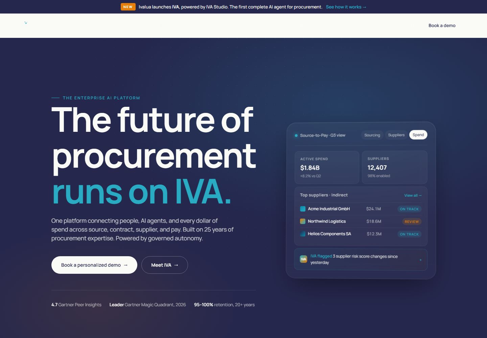
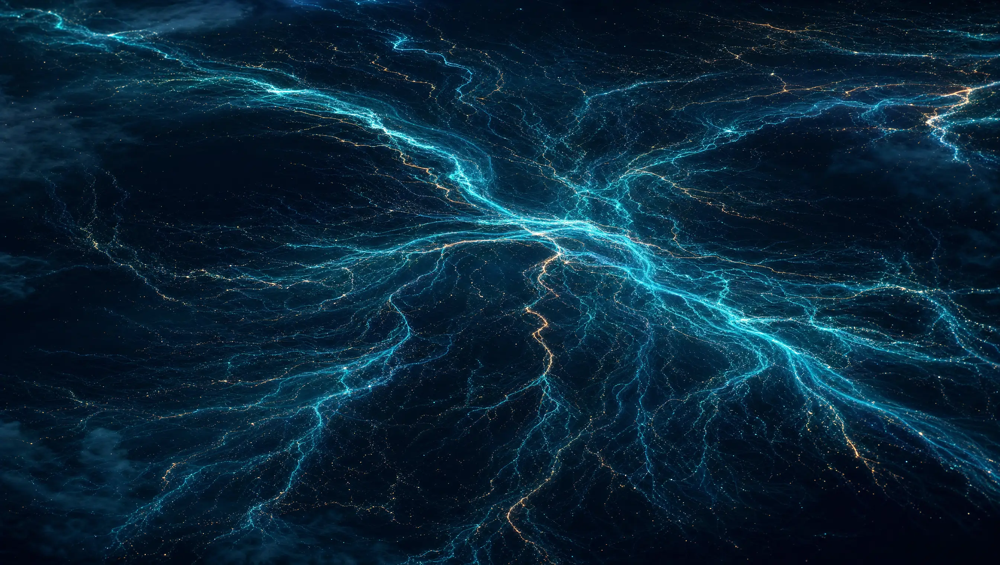

01
The starting point
The previous version of this site was a light-first enterprise homepage: warm bone surfaces, Ivalua indigo drench sections, Manrope throughout, in the Linear/Stripe lane. It was competent and calm. The brief this time was different: make something fundamentally different that demonstrates what an AI can do with taste, 3D, and motion, without abandoning the brand.

So the redesign is a deliberate inversion. Where the old site was daylight, this one is night. Where the old site decorated sections with static gradients, this one runs a single live shader under the whole page. What survives untouched: Ivalua's actual hues (indigo, teal, cyan, ember orange), the sparkle glyph from the wordmark, the tagline, and the rule that orange belongs exclusively to IVA, the AI agent.
02
Concept: The Current
Procurement platforms manage flows: money, goods, risk, trust. The concept treats enterprise spend as a living current of light moving through darkness, and Ivalua as the instrument that makes it visible and navigable. Every design decision hangs off this one metaphor:
- The WebGL background is a literal current: filaments of teal light flowing horizontally.
- Scrolling the page is travelling down the river: the hero is bright open water, the narrative sections are deep and calm, and the final CTA is the current resurfacing.
- IVA appears as heat in the water: the only warm element in a cold world.
- The stats section is titled "The current, measured" and set as a ledger, not a card grid.
One metaphor, enforced everywhere, is what separates an art-directed site from a themed template. When a decision didn't serve the current, it was cut.
03
Color
The palette is defined in OKLCH so lightness and chroma can be reasoned about perceptually. Every neutral is tinted toward the brand indigo (hue ≈ 292°); there is no pure black or white anywhere on the page. Brand hues were preserved but re-tuned for luminosity on dark ground.
oklch(12% .028 292)
oklch(20% .045 288)
oklch(95% .006 95)
oklch(74% .115 215)
oklch(58% .1 220)
oklch(72% .155 55)
oklch(96% .011 95)
Two rules give the palette its discipline. First, ember is rationed: it appears only where IVA acts (the agent section, the rare warm filament in the shader). By the time you reach the console demo, orange means "the AI is doing something" without a label. Second, the page keeps one light interlude: the customer-proof section flips to warm bone. A single inversion mid-scroll resets the eye and makes both worlds read as intentional.
04
Typography
Three families, each with one job:
The point of Anybody is its variable width axis. The hero headline enters at 115% width and compresses to 72% as it leaves the viewport, so the type itself behaves like matter in the current: the page's one typographic special effect, driven by scroll position rather than a looping animation. The previous site's Manrope was retired: a rounded friendly sans had no place in a nocturnal instrument.
05
The shader
The background is one fragment shader on one fixed canvas: no Three.js, no scene graph, just raw WebGL drawing a single triangle. The field is built from domain-warped fractal Brownian motion: noise fed through itself twice, then shaped into filament ridges that flow horizontally.
// two warp passes, then ridge extraction w1 = vec2(fbm(q + t), fbm(q + vec2(5.2, 1.3) - t*0.7)); w2 = vec2(fbm(q + 3.5*w1 + ...), fbm(q + 3.5*w1 + ...)); f = fbm(q + 3.0*w2); fil = pow(1.0 - abs(sin(f*9.0 + q.x*2.0 - t)), 6.0);
Three uniforms tie it to the page instead of letting it run as a screensaver:
- uGlow — brightness follows scroll: full in the hero, dimmed to 18% through the reading sections, rising again at the CTA. The shader is the narrator, not wallpaper.
- uEmber — warm filaments fade in only as the IVA section approaches the viewport center: the same color law as the UI, enforced inside the GLSL.
- uMouse — the field drifts a few degrees toward the cursor, eased at 4% per frame, so it feels aware without being twitchy.
Anti-aniso trick: the noise space is stretched (x·0.55, y·2.1) so ridges elongate horizontally and read as a current rather than clouds. A vertical falloff band keeps the field calm behind text zones. Resolution is capped at 1.5× DPR and the loop pauses when the tab is hidden.
06
Motion
Scroll is the timeline. Lenis supplies inertial scrolling; GSAP ScrollTrigger choreographs everything against it. The system, top to bottom:
- Entrance — a sub-1.6s counter veil while fonts and the shader warm up, then the headline rises line-by-line from clipped containers. The veil has a hard timeout: it can never hold the page hostage.
- The Shift — a pinned viewport where three statements pass through as you scroll, each illuminating word-by-word. Reading speed becomes scroll speed: the visitor performs the copy.
- Platform — vertical scroll converts to horizontal travel through the four product chambers, with 3D pointer tilt on each plate. Falls back to a vertical stack on touch widths.
- Console — IVA's demo types its own query when it enters the viewport, once, then yields structured answers with staggered reveals.
- Ledger — figures count up with exponential easing: fast approach, gentle landing, tabular numerals so digits don't jitter.
Everything eases with expo-out curves; nothing bounces. And every effect checks prefers-reduced-motion first: with it set, the shader renders one static frame, pins unroll into normal document flow, and all copy is simply visible.
07
AI-generated assets
Two images were generated with GPT Image 2 (via Higgsfield), art-directed by prompt to match the palette exactly: deep indigo void, cyan rim light, ember interior.


Everything else on the page: glyphs, the sparkle, the console, the grain: is hand-built SVG, CSS, or GLSL. Generated imagery is used where photography would be, never as a substitute for design.
08
Accessibility & speed
- Reduced motion collapses every animation, including the WebGL loop, to a static, fully readable page.
- The animated console is also a single role="img" with a prose description, so screen readers get the story without the typing theater.
- Contrast: ink on void ≈ 15:1; cyan on void ≈ 9:1; all mono metadata stays above 4.5:1.
- Semantic landmarks, skip link, focus-visible rings in signature cyan, real links everywhere.
- No build step, three small files, two AI images (lazy-loaded WebP), fonts subset by Google Fonts. The shader costs one draw call per frame and sleeps when the tab hides.
09
Three iteration passes
After the first complete build, the site went through three full fine-toothed-comb passes: live in a browser, at desktop and mobile widths, with console and layout instrumentation. What each pass caught:
- "YOUR SPEND" clipped inside its reveal container at 375px: the fluid type floor was too high. Lowered the clamp floor from 52px to 41px.
- The fixed nav kept its dark scheme while floating over the light proof section, reading as a muddy gray bar. Added a scroll observer that flips the nav to a bone/dark-ink scheme exactly while it overlaps that section.
- The pinned narrative statements sat in the top third of the viewport, leaving dead space below. Statements are now optically centered in the pin.
- The stats ledger ended in a hard horizontal seam against the CTA's live shader. Its background now dissolves to transparent over the last quarter.
- The loader veil replayed on every visit. It now shows once per session; returning visitors go straight to the headline choreography.
- CTA microcopy sat below comfortable contrast on the brightened shader. Raised one step on the ink scale.
- The proof interlude was typographically strong but spatially empty. Added a monumental, nearly-invisible brand sparkle on the right: the one place the logo glyph appears at architectural scale.
- The four ledger figures were equal in weight, so none led. The spend figure ($2.1T, the number that defines the company) now carries the signature cyan.
- Platform plates tilted but didn't respond to light. Added a cursor-tracked cyan sheen inside each plate, matched to the tilt.
- The scroll cue read as static text. Its arrow now breathes on a slow sine loop.
- Verified the variable-width scrub does real work: the hero headline measures 115% width at rest and compresses below 81% mid-exit.
- Added the before/after evidence to this guide: process claims are cheap without receipts.
- Visitors with JavaScript disabled were trapped behind the loader veil. A noscript layer now hides the veil, reveals all copy, and unrolls the pinned sections into normal flow.
- Below 900px the nav links disappeared entirely; the Guide link now survives at every width.
- The narrative's first statement was invisible at the exact moment its section pinned. It now arrives already on stage, and unlit words hold 20% presence instead of 13%.
- The shader canvas under-covered the viewport by a scrollbar's width at tablet sizes. Re-sized against true viewport units.
- Anchor navigation fought the inertial scroll with instant jumps. Anchors now glide on the same easing as everything else.
- Added social-share metadata, and a final sweep at 375, 768, and 1280+ widths with a clean console at every stop.
10
Colophon
Designed and built by Claude (Fable 5), Anthropic's frontier model, working autonomously in Claude Code: research, art direction, GLSL, motion, copy, QA passes, and the Netlify deployment, in one continuous session. Type: Anybody, Archivo, Spline Sans Mono (Google Fonts). Motion: GSAP ScrollTrigger + Lenis. Imagery: GPT Image 2 via Higgsfield. Everything else: hand-written HTML, CSS, and WebGL.
BUILT JULY 2026 · #LOVEPROCUREMENT